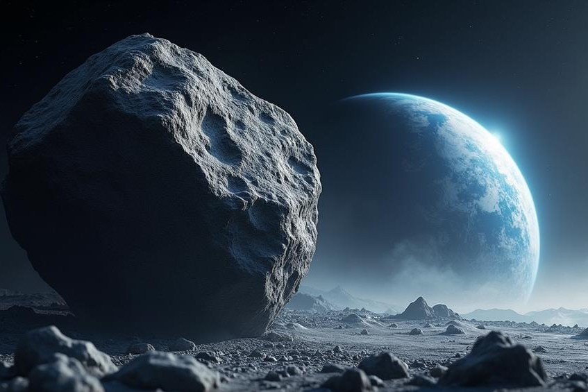

Reporting from de NASA page, a satelite is an object
that orbits surrounding another object in space. There
are two different types of satellites, namely natural
and artificial satellite. As quoted by Science Learn,
according to Dr. Allan, a satellite is anything that
orbits around larger objects.
Satélites
Satélites são objetos que orbitam planetas ou
luas. Eles podem ser naturais, como a Lua que
orbita a Terra, ou artificiais, que são feitos
pelo homem e lançados ao espaço para diversas
finalidades. Os satélites artificiais são usados
para comunicação, meteorologia, navegação,
pesquisa científica e muito mais. Eles podem
estar em diferentes tipos de órbitas, como
órbita baixa da Terra (LEO), órbita geossíncrona
(GEO) e órbita média (MEO). Cada tipo de órbita
tem suas próprias características e usos
específicos.

Satélite Natural
Satélites naturais são corpos celestes que
orbitam planetas ou outros astros. A Lua, que
orbita a Terra, é um exemplo. Diferentemente dos
artificiais, eles não são construídos, mas
formados por processos naturais no cosmos. Sua
influência é crucial para a dinâmica planetária,
afetando marés, estabilidade do eixo de rotação
e até condições climáticas. Além disso,
estudá-los fornece informações sobre a formação
e evolução dos sistemas planetários.
Satélites Artificiais
Satélites artificiais são dispositivos
construídos pelo homem e lançados ao espaço para
orbitar a Terra ou outros corpos celestes. Eles
desempenham funções essenciais, como comunicação
global, monitoramento climático, observação
astronômica, espionagem e navegação por GPS.
Podem ser colocados em diferentes órbitas, como
baixa (LEO), média (MEO) ou geossíncrona (GEO),
dependendo de suas finalidades,evoluindo
constantemente, tornando-os indispensáveis para
a vida moderna.
Evolução dos Satélites
A ideia de objetos orbitando a Terra começou a
ganhar destaque com as descobertas astronômicas
de Johannes Kepler e Isaac Newton nos séculos
XVII e XVIII, que explicaram a dinâmica das
órbitas. No entanto, o conceito de satélites
artificiais foi imaginado apenas no século XX,
com autores como Konstantin Tsiolkovsky e Arthur
C. Clarke vislumbrando dispositivos em órbitas
para comunicação global. O primeiro satélite
artificial, o Sputnik 1, foi lançado pela União
Soviética em 1957, marcando o início da era
espacial. Desde então, os satélites passaram por
grandes avanços tecnológicos, tornando-se
menores, mais eficientes e especializados para
diferentes funções.
O primeiro satélite
O Sputnik 1, lançado pela União Soviética em *4
de outubro de 1957*, foi o primeiro satélite
artificial da história e desempenhou um papel
crucial tanto na *Guerra Fria* quanto na
*Corrida Espacial*. O impacto desse evento foi
profundo e teve repercussões geopolíticas,
militares e científicas, marcando o início de
uma nova era na exploração espacial e uma
intensificação da rivalidade entre as
superpotências da época: os *Estados Unidos* e a
*União Soviética.
O contexto guerra fria
A Guerra Fria foi uma época de intensa
rivalidade e tensão política, ideológica e
militar entre os Estados Unidos (representando o
bloco capitalista e democrático) e a União
Soviética (representando o bloco socialista e
comunista), que começou após o fim da Segunda
Guerra Mundial. Ambos os países buscavam
expandir suas influências e ideologias no mundo,
o que levou à competição em várias frentes,
incluindo armamentos nucleares,tecnologia
militar,espaço e inovações científicas*.
Impacto do lancamento do Sputnik 1
O Sputnik 1, lançado pela União Soviética em 4
de outubro de 1957, foi o primeiro satélite
artificial da história. Esse marco teve
repercussões significativas, simbolizando o
início da era espacial e trazendo avanços em
ciência, tecnologia e geopolítica. Além de
intensificar a rivalidade entre os Estados
Unidos e a União Soviética durante a Guerra
Fria, o evento consolidou o papel da exploração
espacial como um ponto central na Corrida
Espacial, com desdobramentos que transformaram a
ciência e a sociedade modernas.
Para que Servem os Satélites?
Os satélites têm aplicações amplas e
diversificadas, que incluem:
Navegação: Operar sistemas como o GPS,
essenciais para transporte, mapeamento e
localização.
Meteorologia: Monitorar o clima, prever
condições meteorológicas e rastrear eventos
extremos, como furacões.
Ciência e Exploração: Observar o universo,
coletar dados de outros planetas e estudar
fenômenos terrestres.
Monitoramento Ambiental: Analisar mudanças
climáticas, desmatamento, poluição e recursos
naturais.
Segurança e Defesa: Observar movimentações
estratégicas, espionagem e comunicação militar.
Objetivo dos Satélites
Os satélites têm objetivos variados que atendem
a diversas necessidades humanas e científicas.
Eles são usados para comunicações,
possibilitando transmissões de TV, telefonia e
internet em escala global. Além disso,
desempenham papéis cruciais no monitoramento
ambiental, observando mudanças climáticas,
desmatamento e desastres naturais. Satélites
também são essenciais para a navegação,
fornecendo dados para sistemas GPS e guiando
aviões, navios e veículos terrestres. No campo
da ciência, permitem estudos astronômicos,
análise do espaço e observação da Terra com
precisão. Por fim, são usados na defesa e
segurança, viabilizando vigilância, rastreamento
e comunicações militares estratégicas.
Quando Começaram a Ser Estudados?
O estudo de satélites começou com teorias que
explicavam o movimento dos corpos celestes. No
século XVII, Johannes Kepler formulou as leis
que regem as órbitas planetárias, enquanto Isaac
Newton, no século XVIII, descreveu a gravidade e
como ela influencia os objetos no espaço. Esses
avanços abriram caminho para a ideia de objetos
artificiais orbitando a Terra. No século XX,
Konstantin Tsiolkovsky desenvolveu teorias sobre
foguetes e propôs o uso de satélites para
comunicações. Mais tarde, cientistas como Arthur
C. Clarke imaginaram satélites geossíncronos,
que tornaram-se viáveis com o avanço da
tecnologia espacial na década de 1950.
Quando Começaram a Ser Produzidos Satélites
Artificiais?
A produção de satélites artificiais começou no
contexto da Guerra Fria. Em 1957, a União
Soviética lançou o Sputnik 1, o primeiro
satélite artificial da história, como parte de
uma competição tecnológica com os Estados
Unidos. Pouco depois, em 1958, os EUA lançaram
seu primeiro satélite, o Explorer 1. Esses
lançamentos marcaram o início da exploração
espacial e do uso de satélites artificiais para
finalidades científicas, militares e comerciais.
A partir daí, a produção de satélites se
expandiu rapidamente, impulsionada por avanços
tecnológicos e pela crescente demanda por
conectividade e exploração.
Empresa
Nossa empresa é especializada em astrologia e em
proporcionar uma experiência única de autoconhecimento
através dos astros. Com uma abordagem moderna e
acessível, oferecemos conteúdo de qualidade sobre
horóscopos, previsões astrológicas, mapas natais e temas
relacionados ao universo astrológico.
Nosso time é composto por especialistas apaixonados por
astrologia, comprometidos em oferecer informações
precisas e insights valiosos para nossos leitores.
Buscamos facilitar o entendimento das influências
planetárias e ajudar nossos seguidores a se conectarem
com seu verdadeiro propósito.
Aqui, cada conteúdo é pensado para inspirar, educar e
transformar, tornando a astrologia uma ferramenta
prática para o crescimento pessoal e a harmonia com o
cosmos.
Contactos
Contacte-nos via terminal telefónico:+244972798291
ou via E-mail:theerror395.gmail.com
Sobre Nós
Bem-vindo ao nosso espaço dedicado à astrologia! Aqui,
exploramos os mistérios do cosmos, conectando você ao
poder dos astros e ajudando a desvendar o impacto deles
em sua vida. Nosso objetivo é trazer insights profundos,
orientações práticas e reflexões transformadoras por
meio de análises astrológicas, horóscopos, e conteúdos
exclusivos.
Acreditamos que a astrologia é uma ferramenta poderosa
para o autoconhecimento e o crescimento pessoal.
Junte-se a nós nesta jornada cósmica para entender mais
sobre você, seus relacionamentos e os ciclos universais
que moldam a sua jornada.